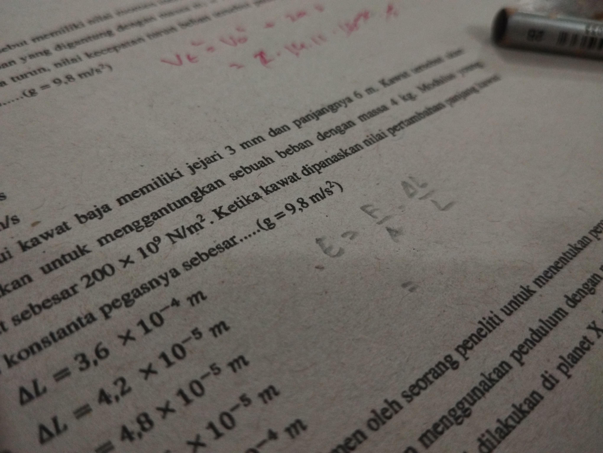

std::cout <<"Halo, Dunia!" << std::endl;
Saat ini saya sedang melaksanakan Ulangan Akhir Tahun (duh, udah mau kelas 12 aja :P), dan Sekolah saya menggunakan Aplikasi CBT untuk pelaksanaan Ujiannya. Namun, aplikasi ini banyak sekali kendalanya yang mendorong saya membuat aplikasi CBT saya sendiri. Saat pembuatan aplikasinya saya kewalahan memikirkan metode curang yang dipakai siswa dan saya berpikir sejenak.. "apakah CBT efektif mencegah kecurangan?"
Setelah pengamatan kurang lebih selama 4 semester, yang dapat saya simpulkan adalah CBT tidak efektif mencegah siswa untuk berbuat curang.
"Bagaimana mungkin? bukankah CBT itu seharusnya ketat dan ampuh mencegah kecurangan?" well.. secara teori seharusnya begitu.. tapi kenyataannya tidak jauh berbeda dengan Ujian berbasis kertas.
Menurut saya ada beberapa faktor kenapa masih terjadinya kecurangan
Tidak ada aplikasi yang aman dari celah, bahkan setelah di-debug pasti ada saja celah yang terlewatkan.. ntah itu kesalahan developer atau faktor luar. Aplikasi yang saya kembangkan jauh dari kata sempurna, bahkan ada celah yang belum saya temukan.
Kadang juga siswa yang jujur bisa terkena false-positive oleh sistem, dan siswa yang curang tidak terdeteksi sistem.
Setelah saya bertanya-tanya dengan operator IT (Developer App CBT), beliau berkata
"Yang namanya maling itu pasti pintar, setebal apapun keamanannya mereka bisa tembus"
Dan ini yang agak menyedihkan, siswa lebih memilih berbuat curang karena curang lebih mudah dilakukan daripada belajar. Hal ini tidak dapat dicegah dengan aplikasi, melainkan dilakukan pembenahan dan kesadaran murid itu sendiri!
Faktor lainnya adalah Pengawas yang tidak tegas, mudah lengah dan tidak aware dengan metode kecurangan siswa. (Ini lebih relevan ke guru yang tidak terlalu up-to-date dengan teknologi)
Well.. ini bukan sepenuhnya kesalahan pengawas, karena bayangkan saja harus mengawasi murid sebanyak 30 anak dalam satu waktu, pasti ada saja momen saat pengawas tidak melihat ada siswa yang menyontek. Kembali lagi ke poin nomor 2 deh..
Sebenarnya kalau peraturan sekolah bukan hanya formalitas dan benar-benar diterapkan, maka jumlah terjadinya kecurangan akan berkurang drastis! Buktinya siswa masih membawa 2 perangkat (I'M LOOKING AT YOU, iPhone USER) karena peraturan "membawa 2 hp bakal disita" hanya bersifat ancaman dan tidak pernah diberlakukan, murid nggak takut ancaman remeh seperti itu! Harus ada penerapan peraturan dengan tegas
Kesimpulannya, aplikasi CBT tidak terlalu efektif untuk mencegah kecurangan. Tidak ada solusi berupa software atau media apapun untuk menghentikan kecurangan, karena ini masalah tentang budaya curang yang turun temurun di Indonesia.
Pencegahan yang tepat adalah untuk mendisiplinkan murid untuk jujur, penegasan peraturan, dan perlunya KESADARAN DIRI MURID (ahem) akan buruknya berbuat curang.
Berbuat curang berarti mendzalimi orang lain dan mendzalimi diri sendiri.
Thanks for reading, see ya!